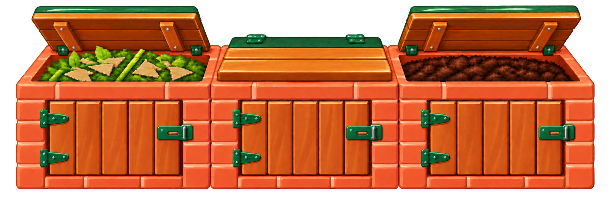
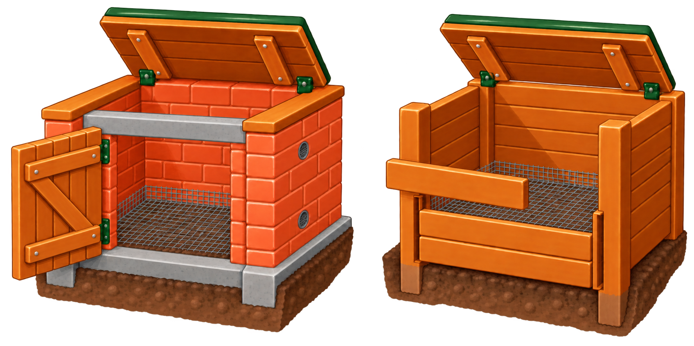

11 October 2026. Two hinges and a distinct hasp per front door, with the wooden plank lids retained. The two lower examples reuse the pilot’s existing brick/timber illustration. The stage arrows now use editable, gently curved orange shapes with a lighter highlight. Revised artwork and page remain for review.
Built-in image generation: saved prompt, source paths and hashes · Copy and proof checks


Construction drawings are schematic. The one-page overview intentionally omits the detailed building sequence.